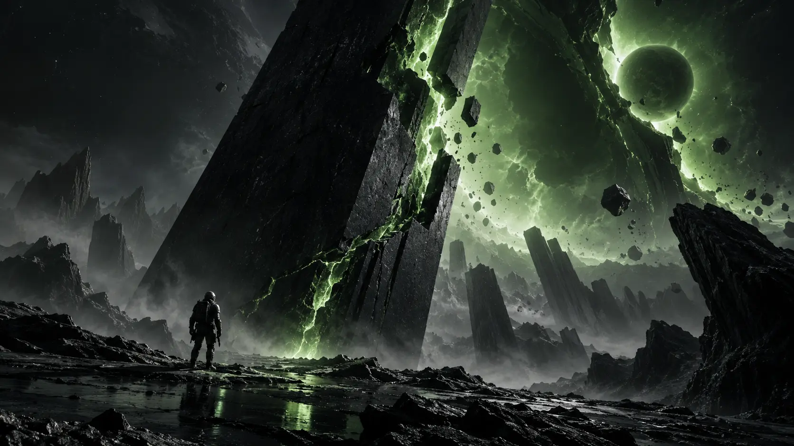
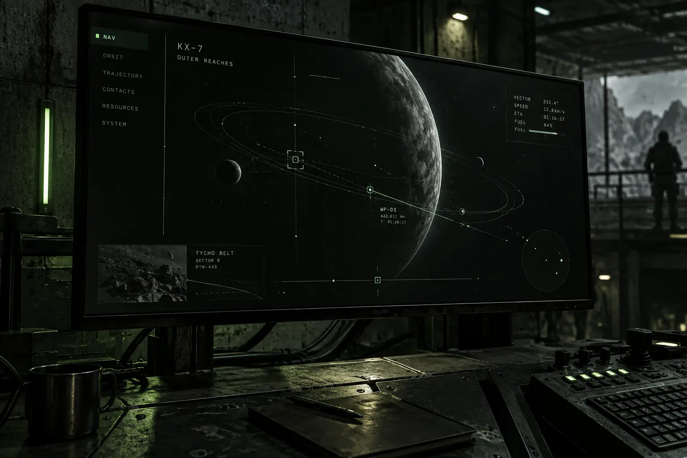
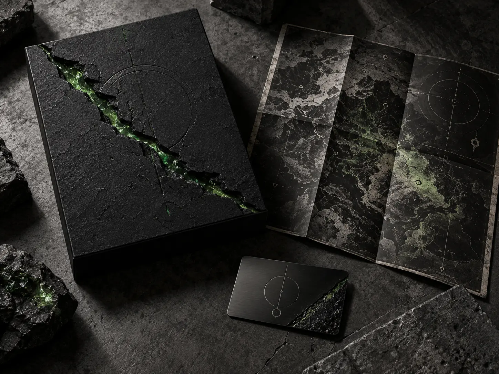
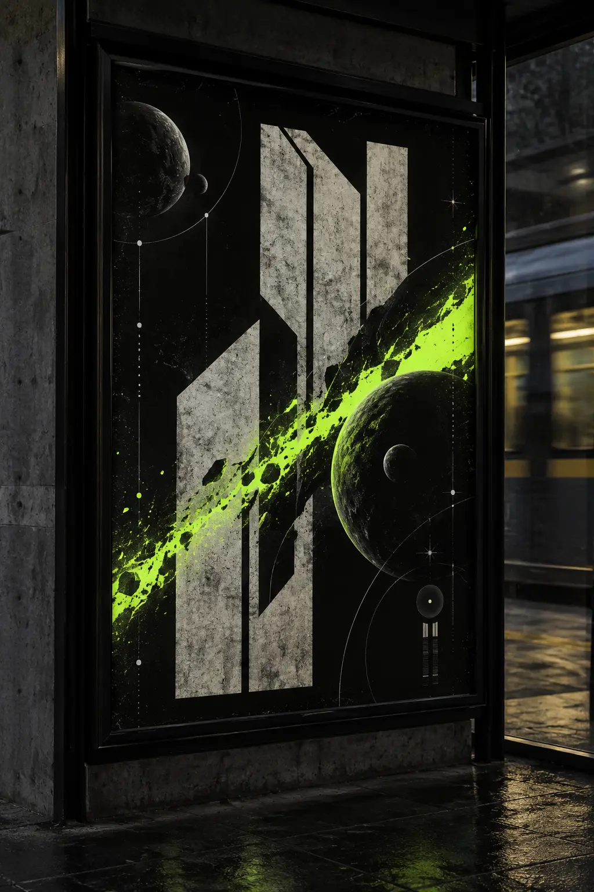
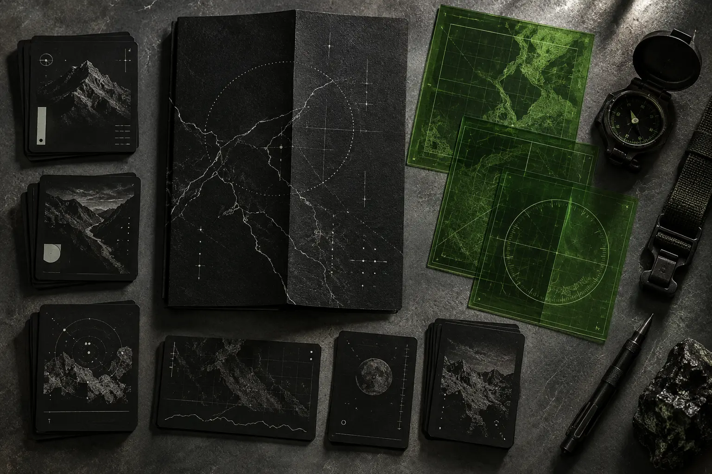
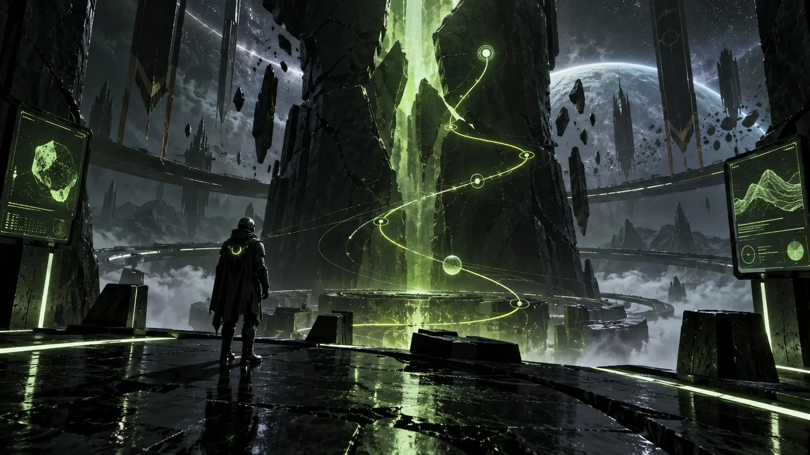

THE FAULT.
A launch message interrupted by fractured coordinates.
CROSS THE FRACTURE.

A science-fiction action game built around fractured space and impossible navigation. The identity behaves like recovered system data: precise, damaged and always moving toward the unknown.
The double slash is both a route and a rupture. It cuts the wordmark, becomes a HUD cursor and creates the visual rhythm of the launch campaign.

Information stays sparse and functional while the environment bends behind it.
SECTOR 07
VECTOR 14.06
RIFT STABILITY 32%
ROUTE UNKNOWN

Collector packaging, access card and field map extend the fracture into tactile materials.
Launch posters and field materials turn navigation data into a tactile campaign system.



Five graphic extensions turn navigation errors, coordinates and rupture into launch-world assets.
A launch message interrupted by fractured coordinates.
The rupture becomes cursor, warning and route.
Telemetry creates tension without visual clutter.
A collectible identity object from inside the world.
The campaign turns public space into a navigation error.
IDENTITY / UI / CAMPAIGN / MOTION DIRECTION
NEXT / CUE →